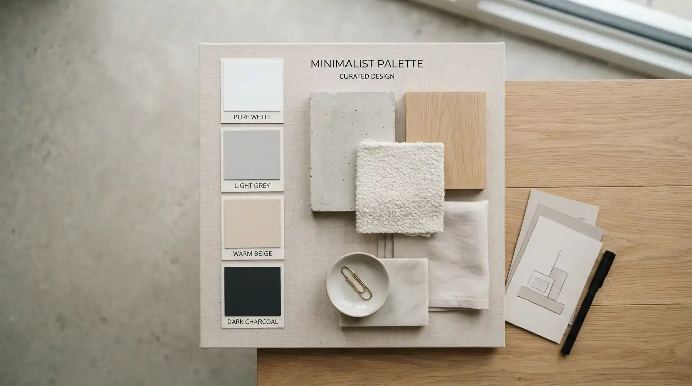

Artikel & Tips Seputar Rumah
Kumpulan tips, panduan, dan wawasan dari tim kami seputar pembangunan, renovasi, dan perawatan rumah
Desain Rumah

Warna cat rumah minimalis yang paling populer adalah warna netral seperti putih, abu-abu, dan krem
karena memberikan kesan bersih, luas, dan mudah dipadukan dengan elemen lain.
TB
Tim Kontraktor Rumah
21 Agustus 2026 · 5 Menit
Baca Selengkapnya
Desain Rumah

Denah rumah minimalis 1 lantai yang populer umumnya mengutamakan tata ruang linear atau L-shape agar
sirkulasi udara dan cahaya tetap optimal meski lahan terbatas.
TB
Tim Kontraktor Rumah
21 Agustus 2026 · 5 Menit
Baca Selengkapnya
Desain Rumah

Ide desain rumah minimalis terpopuler saat ini mengedepankan garis bersih, ruang terbuka, dan fungsi
maksimal dengan biaya efisien.
TB
Tim Kontraktor Rumah
21 Agustus 2026 · 6 Menit
Baca Selengkapnya
Desain Rumah

Wajah minimalisme mulai berubah di 2026. Temukan tren desain rumah minimalis terbaru dengan sentuhan
warna earthy, desain biofilik, dan kehangatan emosional.
TB
Tim Kontraktor Rumah
21 Agustus 2026 · 5 Menit
Baca Selengkapnya
Siap Membangun Rumah Impian Anda?
Konsultasikan kebutuhan pembangunan rumah Anda secara gratis bersama tim kontraktor
Kontraktor Rumah sekarang juga.
Konsultasi via WhatsApp